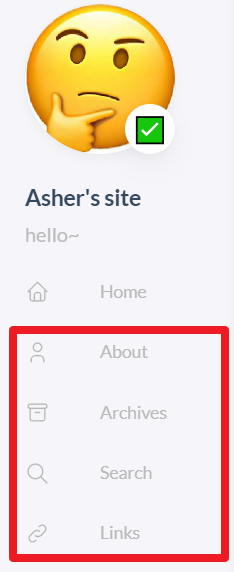

hugo上手使用#
安装
在win10下推荐使用 scoop install hugo-extended 来安装hugo的拓展版，基础版本与拓展版本的命令一样，但是extended版本有更好的效果。
使用hugo命令新建一个能让hugo识别的目录
其中blog是自定义的目录名
进入目录
在blog目录下git clone主题
这里需要将stack主题fork到自己的github，以便于后续的修改能够push
注意！！ 如果想要后面能够使用github action，那么必须必须必须使用submodule的方式引入！！而不能是git clone的方式
git clone xxxx.git themes/stack
1
|
git submodule add xxxx.git themes/stack
|
stack这个目录名是自定义的
修改根目录config.toml
在文件中添加
在根目录下执行命令来构建
运行查看网站效果
完整命令行步骤
1
2
3
4
5
6
|
hugo new site blog
cd blog
git submodule add your_stack_repo.git themes/stack
echo theme='stack' >> config.toml
hugo
hugo server
|
完整的文件目录
DIY环节#
上面的步骤只能让我们看到网站简单的效果并上传文件，还需要做进一步的美化。
静态文件处理#
将 themes/stack/exampleSite/content/的page目录复制到blog目录的content目录下
这样你就有了下面这几个在左侧边栏

修改stack目录下的config.yml#
根据exampleSite目录下的config.yaml的内容，选取自己需要的内容复制粘贴到stack目录下的config.yaml并diy
下面是我的修改后的文件：
1
2
3
4
5
6
7
8
9
10
11
12
13
14
15
16
17
18
19
20
21
22
23
24
25
26
27
28
29
30
31
32
33
34
35
36
37
38
39
40
41
42
43
44
45
46
47
48
49
50
51
52
53
54
55
56
57
58
59
60
61
62
63
64
65
66
67
68
69
70
71
72
73
74
75
76
77
78
79
80
81
82
83
84
85
86
87
88
89
90
91
92
93
94
95
96
97
98
99
100
101
102
103
104
105
106
107
108
109
110
111
112
113
114
115
116
117
118
119
120
121
122
123
124
125
126
127
128
129
130
131
132
133
134
135
136
137
138
139
140
141
142
143
144
145
146
147
148
149
150
151
152
153
154
155
156
157
158
159
160
161
162
163
164
165
166
167
168
169
170
171
172
173
174
|
module:
hugoVersion:
extended: true
min: "0.87.0"
# 上面的保持不变，表明这是一个submodule
# 下面的参考exampleSite的yml配置，从exampleSite的config.yml的params开始参考
params:
mainSections:
- post
featuredImageField: image
rssFullContent: true
favicon:
footer:
since:
customText:
dateFormat:
published: Jan 02, 2006
lastUpdated: Jan 02, 2006 15:04 MST
sidebar:
compact: false
emoji: ✅
subtitle: hello~
avatar:
enabled: true
local: true
# 静态资源存放在stack目录下的asset目录,因为当前配置文件是在stack目录下，所以静态资源目录的路径就是当前目录的asset目录
src: /img/OIP.png
article:
math: false
toc: true
readingTime: true
license:
enabled: false
default: Licensed under CC BY-NC-SA 4.0
comments:
enabled: false
provider: disqus
disqusjs:
shortname:
apiUrl:
apiKey:
admin:
adminLabel:
utterances:
repo:
issueTerm: pathname
label:
remark42:
host:
site:
locale:
vssue:
platform:
owner:
repo:
clientId:
clientSecret:
autoCreateIssue: false
# Waline client configuration see: https://waline.js.org/en/reference/client.html
waline:
serverURL:
lang:
visitor:
avatar:
emoji:
- https://cdn.jsdelivr.net/gh/walinejs/emojis/weibo
requiredMeta:
- name
- email
- url
placeholder:
locale:
admin: Admin
twikoo:
envId:
region:
path:
lang:
giscus:
repo:
repoID:
category:
categoryID:
mapping:
strict:
lightTheme:
darkTheme:
reactionsEnabled: 1
emitMetadata: 0
inputPosition:
lang:
gitalk:
owner:
admin:
repo:
clientID:
clientSecret:
cusdis:
host:
id:
widgets:
# homepage: []
# page: []
homepage:
- type: search
- type: archives
params:
limit: 5
- type: categories
params:
limit: 10
- type: tag-cloud
params:
limit: 10
page:
- type: toc
opengraph:
twitter:
# Your Twitter username
site:
# Available values: summary, summary_large_image
card: summary_large_image
defaultImage:
opengraph:
enabled: false
local: false
src:
colorScheme:
# Display toggle
toggle: true
# Available values: auto, light, dark
default: auto
imageProcessing:
cover:
enabled: true
content:
enabled: true
# 注意yml的语法是下一行缩进2个空格
menu:
main:
- indetifier: categories
name: categories
url: /categories/
weight: 30
- indetifier: tag
name: tags
url: /tags/
weight: 30
|
这里说一下为什么我选择修改stack目录下的 config.yaml文件而不是根目录下的 config.toml文件
1.因为我认为主题的配置应该在主题目录中而不是在根目录对于整个站点的配置中，如果以后需要使用其他主题，那么就不用过多的修改 config.toml文件
2.当我们在命令行中运行 hugo命令的时候，可以发现，hugo是会将根目录下的 config.toml和主题目录下的 config.yaml文件同时当成配置文件来处理的，所以我们在stack目录下的配置文件也是可以生效的
需要注意的是，如果需要配置 markup参数，需要在根目录下的配置文件进行配置，猜测是因为这个配置项不属于主题，而属于hugo本身，所以在主题目录下的配置文件中无效
1
2
3
4
5
6
7
8
9
10
11
12
13
14
15
16
17
18
19
20
21
22
23
24
25
26
27
28
29
30
31
32
33
34
35
36
37
38
39
40
41
42
43
44
45
|
├─archetypes
├─assets
├─content
│ ├─page
│ │ ├─about
│ │ ├─archives
│ │ ├─links
│ │ └─search
│ └─post
├─public
│ ├─categories
│ ├─img
│ ├─page
│ ├─post
│ ├─scss
│ ├─tags
├─resources
└─themes
└─stack
├─archetypes
├─assets
│ ├─icons
│ ├─img
│ ├─scss
│ └─ts
├─data
├─exampleSite
│ └─content
│ ├─categories
│ │ └─Test
│ ├─page
│ │ ├─about
│ │ ├─archives
│ │ ├─links
│ │ └─search
│ └─post
│ ├─chinese-test
│ ├─emoji-support
│ ├─markdown-syntax
│ ├─math-typesetting
│ ├─placeholder-text
│ └─rich-content
├─i18n
├─images
└─layouts
|
得到第一篇文章#
现在，我们可以复制 blog\themes\stack\exampleSite\content\post目录下的一篇文章到根目录下的 content\post.这里我选择 markdown-syntax目录。
粘贴完之后，在命令行中运行
然后就可以在localhost:1313看到自己的文章了
在终端直接输入hugo server -D就可以在本地预览了，本地预览网址为 localhost:1313，
输入hugo就可以生成public文件夹，这个文件夹可以部署到云服务器或者托管到github上，
注意：输入hugo的生成方式只会往public文件夹里添加内容，但是不会删除外部已经不存在而public里面还存在的文件，
所以我一般用hugo -F –cleanDestinationDir命令，表示每次生成的public都是全新的，会覆盖原来的。
配置Github Pages与GitHub Actions#
现在，在本地我们已经可以看到页面了，但是还希望能通过网络让别人访问到我们的博客，所以需要借助GitHub Pages和Github Actions
Github Pages#
首先在 GitHub 上创建一个 public repository，命名为 username.github.io（根据 GitHub Pages，如果想用这个域名作为博客地址，repo 必须命名为 username.github.io)。这个 repo 会用来存放博客的静态文件，也就是 hugo 创建的 public文件夹。(username是自己的GitHub用户名)
执行下面的命令
1
2
3
4
5
6
|
cd public
git init
git add remote origin username/username.github.io
git add .
git commit -m "init commit"
git push --set-upstream origin main
|
现在打开 https://username.github.io， 应该就可以看到和 localhost:1313一样的内容了
Github Actions#
接下来创建一个另外的 private repository（e.g. blog_source），用这个来存放原始文件（也就是整个根目录），以及设置用于自动部署的 GitHub Actions。GitHub Actions 设置还参考了 Hugo 官方教程。
在根目录下，新建目录 .github\workflows\, 在这个目录中创建 gh-pages.yml文件，内容为：
1
2
3
4
5
6
7
8
9
10
11
12
13
14
15
16
17
18
19
20
21
22
23
24
25
26
27
28
29
30
31
32
33
34
35
36
37
|
name: hugo CI
on:
push:
branches: [ main ]
jobs:
build:
runs-on: ubuntu-20.04
steps:
# 如果stack使用了远程仓库，那么必须以submodule的方式引入才能正常跑通现在这个github action。
# 当stack主题是通过submodule的方式来拉取的时候，应该采用下面四行代码来进行action的构建.
- uses: actions/checkout@v2
with:
submodules: true
fetch-depth: 1
- name: Setup Hugo
uses: peaceiris/actions-hugo@v2
with:
#不使用hugo的最新版是因为最新版和stack主题有兼容性问题，此问题并未得到stack作者的解决
hugo-version: 0.111.3
extended: true
- name: Build
run: hugo
- name: Deploy
uses: peaceiris/actions-gh-pages@v3
with:
personal_token: xxxxxxx #写自己的GitHub personal token
external_repository: username/username.github.io # the public repo hosting website
publish_branch: main # branch hosting the website
publish_dir: ./public
commit_message: ${{ github.event.head_commit.message }}
|
上面的示例中，后面有注释的行都需要自己去确认是否正确填入
因为我们需要从博客仓库推送到外部 GitHub Pages 仓库，需要特定权限，要在 GitHub 账户下 Setting - Developer setting - Personal access tokens 下创建一个 Token。
创建自己的 Github Personal Key
权限需要勾选 repo 与 workflow。
配置后复制生成的 Token（注：只会出现一次），然后在我们博客源仓库的 Settings - Secrets - Actions 中添加 PERSONAL_TOKEN 环境变量为刚才的 Token，这样 GitHub Action 就可以获取到 Token 了。
完成上述配置后，推送代码至仓库，即可触发 GitHub Action，自动生成博客页面并推送至 GitHub Pages 仓库。
现在在我们本地的hugo站点根目录blog关联到远程的blog_source仓库
1
2
3
4
5
6
|
echo "public/" >> .gitignore
git init
git remote add origin https://github.com/username/blog_source.git
git add .
git commit -m "init"
git push --set-upstream origin main
|
注意：将 public\目录放到ignore文件中是必须要做的，因为public目录和另外的远程仓库关联了，对于git来说，如果想要拉取一个目录而同时在这个目录中有一个子目录被其他远程仓库关联了，那么要么把public作为一个submodule要么把public忽略。
由于我们在Github Actions里对public进行推送，所以前者submodule的方式就不用考虑，选择后者。
之后我们只需要执行
1
2
3
|
git add .
git commit -m "create a post"
git push
|
就能自动部署到两个远程仓库了
在 stack 主题中开启 latex 支持#
找到这个 head.html文件
1
|
themes/stack/layouts/partials/head/head.html
|
在文件末尾加上
1
2
3
4
5
6
7
8
9
10
11
12
13
14
15
|
<!-- MathJax configuration for LaTeX support -->
<script>
window.MathJax = {
tex: {
inlineMath: [['$', '$'], ['\\(', '\\)']], // 行内公式定界符
displayMath: [['$$', '$$'], ['\\[', '\\]']], // 块级公式定界符
processEscapes: true,
tags: 'ams' // 启用 AMS 数学环境
},
svg: {
fontCache: 'global'
}
};
</script>
<script id="MathJax-script" async src="https://cdn.jsdelivr.net/npm/mathjax@3/es5/tex-mml-svg.js"></script>
|
完整的文件内容如下
1
2
3
4
5
6
7
8
9
10
11
12
13
14
15
16
17
18
19
20
21
22
23
24
25
26
27
28
29
30
31
32
33
34
35
36
37
38
39
40
41
42
|
<meta charset='utf-8'>
<meta name='viewport' content='width=device-width, initial-scale=1'>
{{- $description := partialCached "data/description" . .RelPermalink -}}
<meta name='description' content='{{ $description }}'>
{{ with .Params.Keywords }}<meta name="keywords" content="{{ delimit . ", " }}">{{ end }}
{{- $title := partialCached "data/title" . .RelPermalink -}}
<title>{{ $title }}</title>
<link rel='canonical' href='{{ .Permalink }}'>
{{- partial "head/style.html" . -}}
{{- partial "head/script.html" . -}}
{{- partial "head/opengraph/include.html" . -}}
{{- range .AlternativeOutputFormats -}}
<link rel="{{ .Rel }}" type="{{ .MediaType.Type }}" href="{{ .Permalink | safeURL }}">
{{- end -}}
{{ with .Site.Params.favicon }}
<link rel="shortcut icon" href="{{ . }}" />
{{ end }}
{{- template "_internal/google_analytics.html" . -}}
{{- partial "head/custom.html" . -}}
<!-- MathJax configuration for LaTeX support -->
<script>
window.MathJax = {
tex: {
inlineMath: [['$', '$'], ['\\(', '\\)']], // 行内公式定界符
displayMath: [['$$', '$$'], ['\\[', '\\]']], // 块级公式定界符
processEscapes: true,
tags: 'ams' // 启用 AMS 数学环境
},
svg: {
fontCache: 'global'
}
};
</script>
<script id="MathJax-script" async src="https://cdn.jsdelivr.net/npm/mathjax@3/es5/tex-mml-svg.js"></script>
|
修改之后, 在 submodule 中 add commit push 然后再回到父repo 中进行 add commit push
根据Hugo官方的方式创建文章#
在blog目录下执行命令
1
|
hugo new posts/my-first-post/index.md
|
Hugo created the file in the content/posts/my-first-post directory. Open the file with your editor.
打开文件会发现文章顶部是
1
2
3
4
5
|
---
title: "My First Post"
date: 2022-11-20T09:03:20-08:00
draft: true
---
|
draft: true表明当前文章是草稿，执行``hugo 和 hugo server`之后不会生成对应的文章在网页上膳食
根据Stack官网的方式调整文章#
文章顶部可以有下面这几个字段
1
2
3
4
5
6
7
8
9
10
11
12
13
14
15
16
17
18
|
+++
author = "Asher"
title = "Markdown Syntax Guide"
date = "2023-06-24"
description = "Sample article showcasing basic Markdown syntax and formatting for HTML elements."
tags = [
"markdown",
"css",
"html",
"themes",
]
categories = [
"themes",
"syntax",
]
series = ["Themes Guide"]
image = "cover.jpg"
+++
|
tag表示文章的标签，我们不需要手动创建标签，只需要在文章顶部写上我们想设置的标签，stack主题和hugo会帮助我们生成tag。categories字段同理
image字段表示封面图，路径一般和文章一样
文章顶部可以是toml格式也可以是yml格式，但是不能混用
在新的电脑上继续你的 hugo#
首先 git clone 源仓库是必不可少的, 但是一定要记得把 submodule 给初始化好, 这样在 git action 的构建中才能以最新的 submodule 来构建 hugo 站点
1
|
git submodule update --init
|
如果在 github 远程仓库上面改动了 submodule 的仓库, 记得在本地仓库下执行
1
|
git submodule update --remote themes/stack
|
当然还是更推荐 init之后在本地改动, 而不是在远程仓库改动, 因为我没有做过直接在远程仓库改动的实验
参考资料#
- Hugo + GitHub Action，搭建你的博客自动发布系统
- 不是从零开始的 Hugo 建站笔记
- GitHub Docs
- Hugo 官网
- Stack Docs